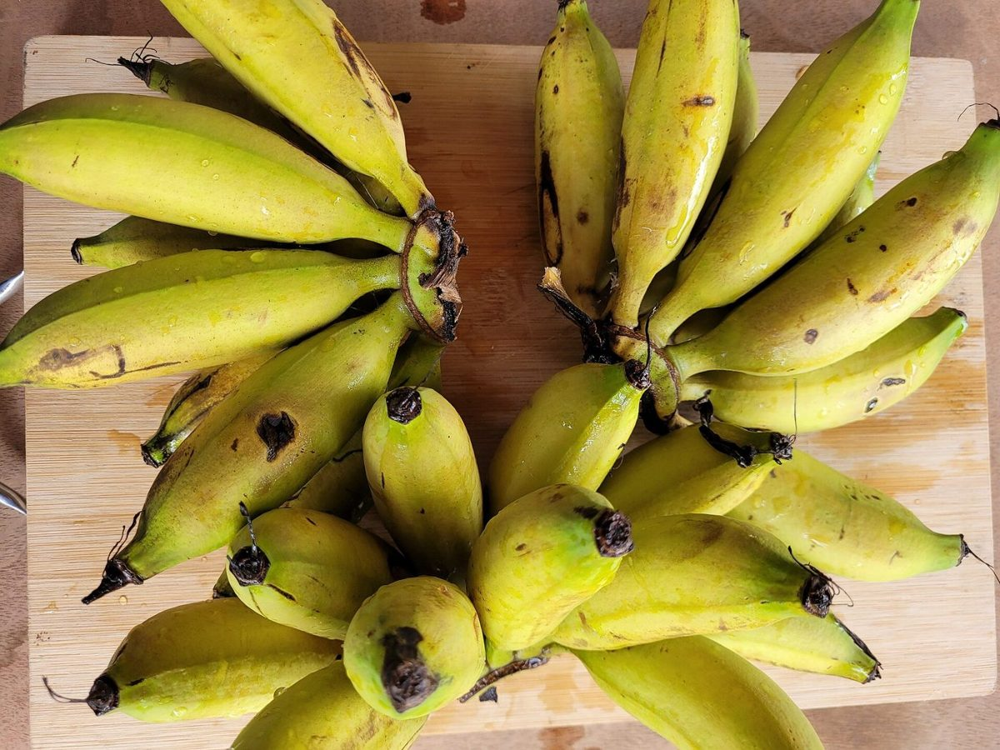
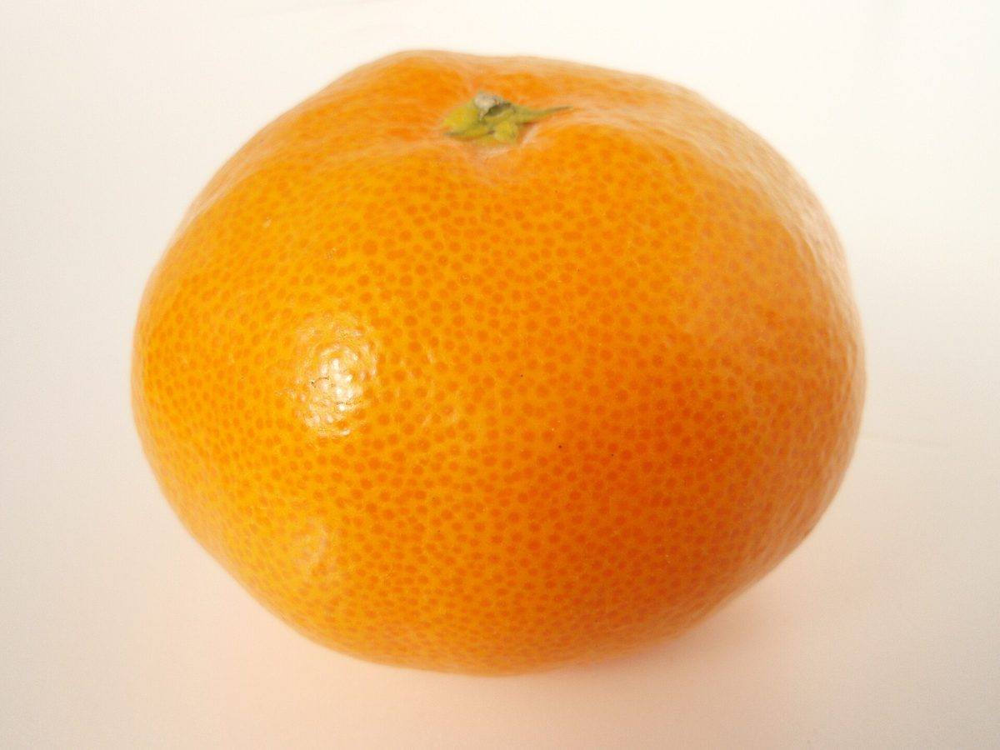
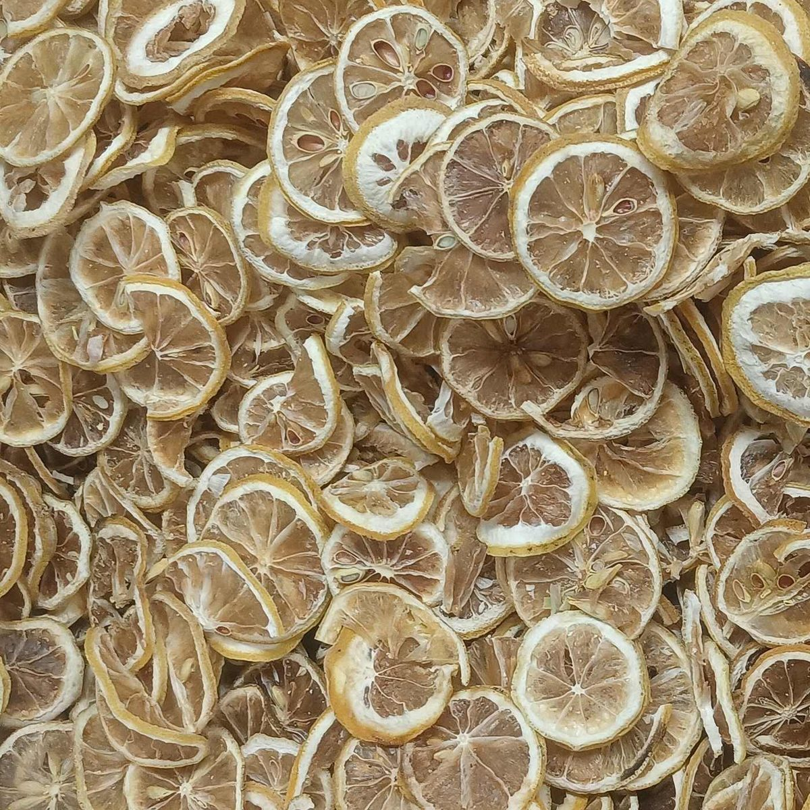
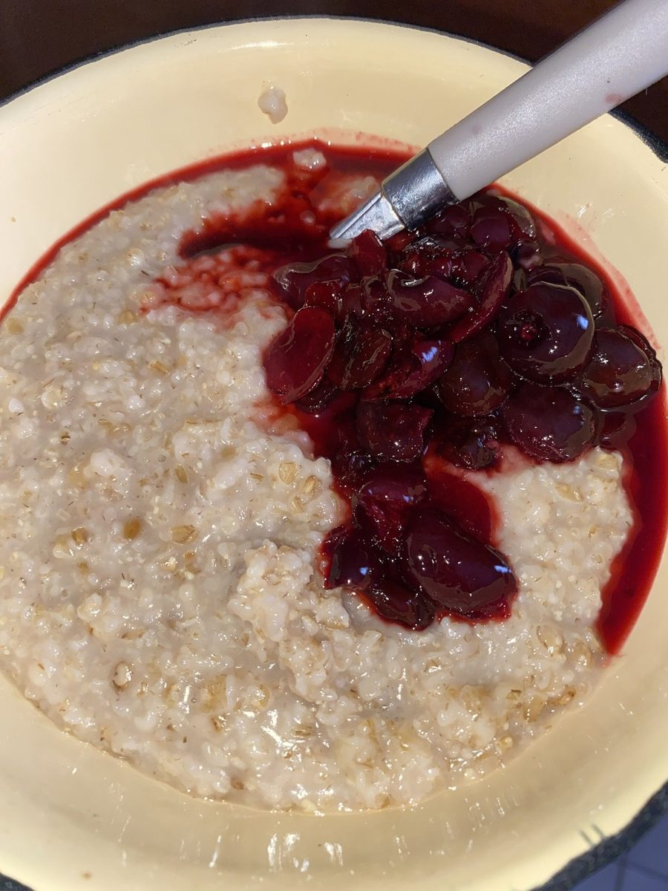

メニュー
Instagramのプロフィールでは、完熟バナナのジュースを軸に、ランチ・フード、グリークヨーグルトなどの紹介が確認できます。具体的な品目と価格は確認できていないため、ここでは準備中としています。
| ジュース | 準備中 |
|---|---|
| フード | 準備中 |
| 価格 | 準備中 |







口コミ(イメージ例)
以下は制作側が作成したイメージ例で、実在のお客様の声ではありません。
イメージ例
バナナの甘みがしっかり感じられて、朝ごはん代わりにもなりそうな一杯でした。
イメージ例
Wi-Fiのある席で、ジュースを飲みながらのんびり作業できたら嬉しいです。
イメージ例
ヨーグルトやフードも気になります。次はお昼に寄ってみたいです。
お店のこと
Newtonは、岩手県滝沢市にあるバナナジュースの専門店です。Instagramのプロフィールでは「岩手県初のバナナジュース専門店」と紹介され、完熟バナナのジュースを提供しています。ワークスペースとWi-Fiの案内もあります。
店名の由来や店主の想いは確認できていないため、ここでは触れません。このサイトの「完熟バナナのやさしい黄色」という配色は、制作側のイメージです。
| 営業時間 | 準備中 |
|---|---|
| 定休日 | 準備中 |
| 電話 | 準備中 |
| SNS | Instagram @newton_0406 |
アクセス
〒020-0672 岩手県滝沢市鵜飼下高柳6-11
写真クレジット
写真はフリー素材のイメージで、撮影地不明のものです。お店や商品を写したものではありません。縮小などの加工をしています。
- images/banana.jpg: Señorita banana (Mindanao, Philippines) 03.jpg / Obsidian Soul / CC0 1.0 / 出典(撮影地不明)
- images/blueberry.jpg: Blueberriessss.jpg / Suzy Hazelwood / CC0 1.0 / 出典(撮影地不明)
- images/mandarin.jpg: Citrus unshiu 20101118 a.jpg / Batholith / パブリックドメイン / 出典(撮影地不明)
- images/apples.jpg: Apples fruit.jpg / safaritravelplus / CC0 1.0 / 出典(撮影地不明)
- images/lemon.jpg: Dried lemon slices.jpg / Fumikas Sagisavas / CC0 1.0 / 出典(撮影地不明)
- images/oatmeal.jpg: Oatmeal with a cherry compote.jpg / Chandapiwa Malema / CC0 1.0 / 出典(撮影地不明)
- images/blackcup.jpg: Mug of Coffee on a Wooden Table / freestocks.org / CC0 1.0 / 出典(撮影地不明)
- images/cupmarble.jpg: Cup of coffee on café table.jpg / Ssu / CC BY-SA 4.0 / 出典(撮影地不明)
- images/muffins.jpg: Homemade Muffins (Unsplash).jpg / NordWood Themes / CC0 1.0 / 出典(撮影地不明)
- images/muffcup.jpg: Enjoying a fresh cup of coffee alongside warm chocolate chip muffins on a wooden table in a cozy kitchen setting.jpg / Shixart1985 / CC BY 2.0 / 出典(撮影地不明)
- images/croissant.jpg: Croissant, whole.jpg / SKopp / CC BY-SA 3.0 / 出典(撮影地不明)
- images/pastry.jpg: Freshly baked pastries with coffee and cookies on a table.jpg / Shixart1985 / CC BY 2.0 / 出典(撮影地不明)
- images/beans1.jpg: Beans (42182293175).jpg / Skitterphoto / CC0 1.0 / 出典(撮影地不明)
ライセンスの詳細は creativecommons.org をご覧ください。